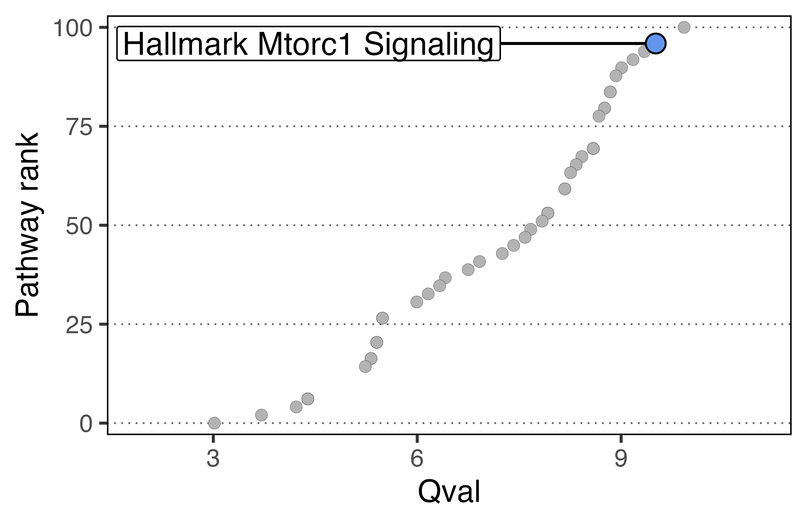

1. Broad overview of the workflow
pathways <- msigdbr("Homo sapiens", "H") %>%
format_pathways()
# The populations here just need to be your normalized expression matrices
scpa_out <- compare_pathways(samples = list(population1, population2),
pathways = pathways)2. Full workflow on an example dataset
Here we’re just going to show some general principles of what you need to get started in a basic pathway analysis. It acts as a quick reference to all the main points of the workflow, but more detailed examples can be found in our other tutorials.
Basic information needed for pathway analysis
The two main bits of information we need are:
- Expression matrix for each condition (this can be formatted as separate data frames/matrices, or stored within a typical Seurat object)
- Gene sets
Loading in packages
For this simple example, we’re going to load in a few packages. msigdbr allows access to a large number of gene sets that are collated here
Loading in data
Here we’re going to use data taken from the Szabo, P… Sims, P paper. You can find this data in an R object here
t_cells <- readRDS("szabo_t_cell.rds")
Generating samples from a Seurat object
For this basic comparison, we’re going to look at T helper 1 (Th1)
and T central memory (Tcm) cells. To generate expression matrices that
SCPA can use, we can run the seurat_extract function. This
takes a Seurat object as an input, subsets data based on the Seurat
column metadata, and returns an expression file for that given
subset.
tcm <- seurat_extract(t_cells,
meta1 = "cell", value_meta1 = "cd4 tcm")
th1 <- seurat_extract(t_cells,
meta1 = "cell", value_meta1 = "cd4 th1")Generate some gene sets using msigdbr
We then need to generate our gene sets. msigdbr is a handy package
that allows you to get this information. Here we’re pulling all the
Hallmark pathways, and using the format_pathways function
within SPCA to get them properly formatted. A detailed explanation of
generating gene sets for SCPA can be found here
pathways <- msigdbr("Homo sapiens", "H") %>%
format_pathways()Comparing samples
We’re all set. We now have everything that we need to compare the two
populations. So just run compare_pathways and use the
objects we created above.
scpa_out <- compare_pathways(samples = list(tcm, th1),
pathways = pathways)And in scpa_out, we have all our results.
head(scpa_out, 5)
#> Pathway Pval adjPval qval
#> 32 HALLMARK_MYC_TARGETS_V1 5.788383e-101 2.894192e-99 9.926655
#> 2 HALLMARK_ALLOGRAFT_REJECTION 7.532277e-93 3.766139e-91 9.509159
#> 31 HALLMARK_MTORC1_SIGNALING 7.532277e-93 3.766139e-91 9.509159
#> 36 HALLMARK_OXIDATIVE_PHOSPHORYLATION 1.061001e-89 5.305003e-88 9.342126
#> 23 HALLMARK_IL2_STAT5_SIGNALING 1.315549e-86 6.577745e-85 9.175071
#> FC
#> 32 -87.81108
#> 2 -21.07656
#> 31 -45.82991
#> 36 -47.98635
#> 23 -20.23701Plotting some basic output
You can use SCPA to generate a pathway rank plot. For example, we can
highlight one of the topmost pathways – MTORC1 – using the
plot_rank function.
plot_rank(scpa_out = scpa_out,
pathway = "MTORC1",
base_point_size = 2,
highlight_point_size = 3)